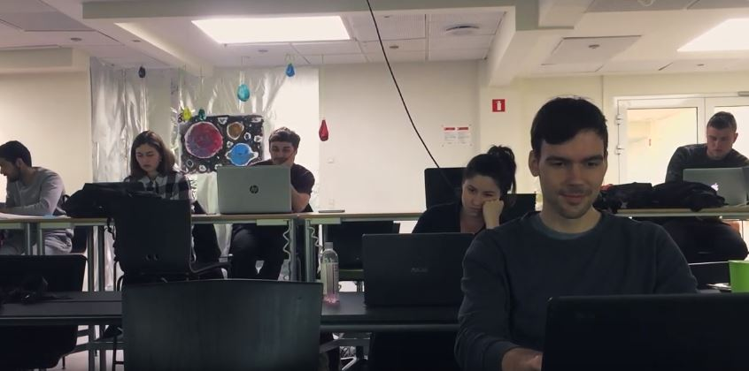
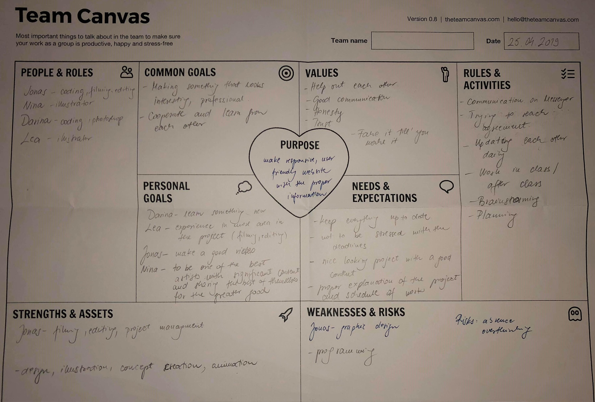
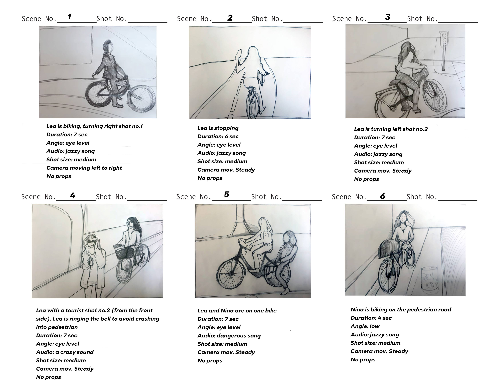

03.01 AStory Without Words
"How to Fail an Exam"
Click HERE to see the video In this project we used PremierePro for the first time. The goal was to come up with the srory, film it and edit it. The hard part was to tell a story without using any words.
Our story took place in a class room where students were not paying attention to the lecture and started dreaming. To show the viewer that student fell asleep we used blurry/wawy effect. One of our filming goals was to create as less cuts as possible, so for that we used hand-held electronic stabilizer to film stable movement going from one student to the other.
03.02 A Bicycle Guide for non-Danes
03.02.01 Team Canvas
This was my favourite project of the semester and best group so far. We had really good communication between members and every one of us had different skills that made this group work so well. My strong side was creating story, filming and editing.
03.02.03 Storyboard
The story is a guide for cycling which takes palce in Nyhavn, Copenhagen, covering the rules and the things one should do andnot to do. The scenes are covering how to stop, how to turn right and left, and the importance of having a bell and a light on the bike. The second part of the story is about the things what we should not do while biking. That is the part where we keep attention, while making the scenes funnier.
03.02.04 XD Prototype
03.02.05 Link to site